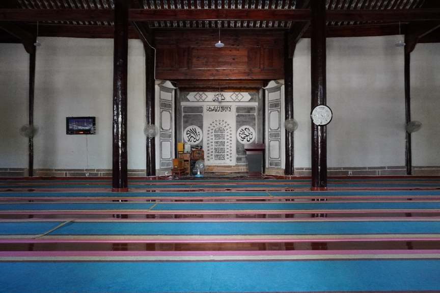
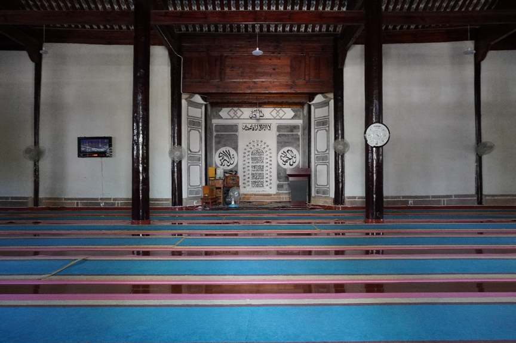

曲硐村
Qudong
曲硐村是中國最大的回族自然村， 也是古時的博南古道上唯一完整保留下來的回族村落。目前有兩千多戶人家，總共8700多名村民。村中九成以上是回民，剩下的主要是漢族。雖然漢族在村中算是少數民族，但是村民之間和睦相處，互相幫扶。
Qudong is the largest Hui Natural Village in China. It is also the only Hui village remaining on the Bonan Ancient Park that have survived intact. At present, there are more than 2,000 families, a total of more than 8,700 villagers in Qudong. More than 90% of the villages are Hui people, and the rest are mainly Han people. Although the Han people are minorities in the Qudong, the villagers live in harmony and help each other.
曲硐的回族村民一直以來以善於經商聞名，而經商也為當地居民帶來富裕的生活。 作為地處南方絲綢之路的必經之處，從明末清初開始，英國、荷蘭、日本等國家都有文字記載曲硐市場上交易的盛況，被譽為南方絲綢之路上的“國際貿易市場”。中國改革開放之後，當地村民率先利用開放政策，運用善長經商的傳統和才能，使得當地成為中國核桃交易中心，並且成為全中國核桃價格的晴雨錶。另外還成為滇西最大的中藥材集散地、最大的皮毛集散地、最大的菌子集散地。這種領先地位，一直保持到2005年。
The Hui people in Qudong have long been known for their good business skills, which brings prosperous life to the local residents. As one of the most important courier stations of the Southern Silk Road, Britain, the Netherlands, Japan and other countries have written records of the great event of trade in the Qudong market ever since the late Ming and early Qing Dynasties, known as the "international trade market" on the Southern Silk Road. After China's reform and opening-up, local villagers make the best of their talent in business and took the lead in utilizing the policy, making the local walnut trading center a barometer to the price of walnuts in China. In addition, it has become the largest distribution center of traditional Chinese medicines, fur and fungi in Western Yunnan. Qudong had maintain their leading positions until 2005.
曲硐的回族村民一直以來以善於經商聞名，而經商也為當地居民帶來富裕的生活。 作為地處南方絲綢之路的必經之處，從明末清初開始，英國、荷蘭、日本等國家都有文字記載曲硐市場上交易的盛況，被譽為南方絲綢之路上的“國際貿易市場”。中國改革開放之後，當地村民率先利用開放政策，運用善長經商的傳統和才能，使得當地成為中國核桃交易中心，並且成為全中國核桃價格的晴雨錶。另外還成為滇西最大的中藥材集散地、最大的皮毛集散地、最大的菌子集散地。這種領先地位，一直保持到2005年。
The Hui people in Qudong have long been known for their good business skills, which brings prosperous life to the local residents. As one of the most important courier stations of the Southern Silk Road, Britain, the Netherlands, Japan and other countries have written records of the great event of trade in the Qudong market ever since the late Ming and early Qing Dynasties, known as the "international trade market" on the Southern Silk Road. After China's reform and opening-up, local villagers make the best of their talent in business and took the lead in utilizing the policy, making the local walnut trading center a barometer to the price of walnuts in China. In addition, it has become the largest distribution center of traditional Chinese medicines, fur and fungi in Western Yunnan. Qudong had maintain their leading positions until 2005.
曲峒古村落
Qudong Ancient village
2019年下半年， 曲硐回族文化城成為國家3A景區，為遊客重現當年的馬幫文化，通過複製傳統舊建築，力求還原當年古村落的風貌。文化城內除了建有回族美食一條街，還有歷史老宅改建成的精品民宿，讓遊客有機會體驗當年這個南方古絲綢之路商貿中心的生活。
In the second half of 2019, Qudong Hui Cultural City became one of the 3A National Tourism Attraction. It aims to recall the Ancient Horse Caravan culture for tourists and maintain the style and features of the ancient villages by reconstruct the old traditional buildings. Apart from building Hui delicacies food court, there are also Homestay hotels rebuilt from historic old houses, which provide tourists with a great opportunity to experience living the commercial and trade center of the ancient Silk Road in South China.
清真古寺
Ancient Mosque
村內坐落的古清真寺，是村內穆斯林舉行日常五時拜、主麻聚禮和節日中會禮之處。村民也定期慶祝古爾邦節等伊斯蘭教傳統節日。曲硐清真古寺最早建于曲硐南山下，至民國二年（1913年），遷移改建成現有的禮拜寺。和其他地方受阿拉伯文化影響的清真寺不同，整個寺院的建築充滿中式建築風格，體現了當地回民，融入當地文化的歷史。
The ancient mosque situated in the village is the place where Muslims in the village hold their daily five-hour worship, main linen gathering and festival ceremonies. Villagers also regularly celebrate traditional Islamic festivals such as Gurban Festival. Qudong Mosque was first built at the foot south mountain of Qudong, and then move to the existing worship temple in 1913. Unlike other mosques influenced by Arab culture, the architecture of the whole monastery is full of elements of Chinese architectural. It reflects the history of the local Hui people integrating into the local culture.
村內坐落的古清真寺，是村內穆斯林舉行日常五時拜、主麻聚禮和節日中會禮之處。村民也定期慶祝古爾邦節等伊斯蘭教傳統節日。曲硐清真古寺最早建于曲硐南山下，至民國二年（1913年），遷移改建成現有的禮拜寺。和其他地方受阿拉伯文化影響的清真寺不同，整個寺院的建築充滿中式建築風格，體現了當地回民，融入當地文化的歷史。
The ancient mosque situated in the village is the place where Muslims in the village hold their daily five-hour worship, main linen gathering and festival ceremonies. Villagers also regularly celebrate traditional Islamic festivals such as Gurban Festival. Qudong Mosque was first built at the foot south mountain of Qudong, and then move to the existing worship temple in 1913. Unlike other mosques influenced by Arab culture, the architecture of the whole monastery is full of elements of Chinese architectural. It reflects the history of the local Hui people integrating into the local culture.
 

滇朴公园
Dianpu Park
建於元代，至今已有700多年的歷史，是曲硐回民“歸真”之後的喪葬聖地，也是當地回民寄寓哀思的懷古聖地。院內安葬著元、明、請三代戍邊屯墾的回族士兵及家眷的遺骸。可惜隨著歷史的變遷，園內的墓葬幾經損毀破壞，墓碑遺失殆盡，唯留下57株300多年以上樹齡的滇朴古木，虯枝繁茂，綠蔭婆娑。 目前公園內設有回族喪葬示範，展現回族講究速葬、簡葬的傳統。根據伊斯蘭教義，死後人人平等，都是在洗淨身體後，用三丈六尺白布裹起，葬在窯洞式的簡陋幕洞中，蓋起蓋板。
Dianpu Park, a sacred cemetery for Hui people built in the Yuan Dynasty, has a history of over 700 years. It is also a memorial park for the locals to express their sorrows and commemorate their ancestors. In the courtyard, the remains of Hui soldiers and their families who were garrisoned and reclaimed in Yuan, Ming and inviting three generations were buried. With the change of times and history, most of the tombs and the tombstones were destroyed and lost. Only 57 Yunnan Ancient Trees of over 300 years old have survived, with lush twigs and green shade. At present, there are demonstrations of Hui's funeral in the park, showing the Hui's tradition of paying attention to quick and simple burial. According to Islamic doctrine, everyone is equal after death. The deceased are all wrapped up in white cloth of three feet and six feet, buried in a simple curtain cave and covered with a cover.
古道馬幫
Ancient Horse Caravan
由於雲南山險水惡、地勢複雜，決定了馬是古代雲南唯一的運輸工具，並由此形成了特色的馬幫文化。曲硐由於地處的位置，成為馬幫重要的驛站。雖然地處邊陲，但馬幫實現了內外文化交流，使得曲硐，乃至雲南，成為一個文化包容的地方。走在曲硐村內，從雕塑，以及建築，可以感受濃濃的馬幫文化。
Because of the dangerous and complex terrain in Yunnan, horses were the only means of transportation in ancient Yunnan, and thus formed the characteristic culture of horse caravan. Due to the location of Yongping, it became an important post station for the horse caravan. Although located in the frontier, the horse caravan has achieved cultural exchanges both inside and outside, making Qudong, and even Yunnan, a place of cultural inclusion. Walking in Qudong Village, we can feel the strong culture of horse caravan from sculptures and architectures.
送郎橋
Songlang/Farewell Bridge
傳說中當年曲峒村的妻子們和外出經商的丈夫們的道別之地。由於旅途險惡和漫長，經商離家意味著長時間的分別，甚至可能是一場生離死別。但正是馬幫，不僅為自己家人創造更好的生活，繁榮了當地經濟，也促進了不同文化之間的交流。
It is said that the bridge is where the wives of Qudong Village and their husbands who went out to do business said goodbye to each other. Because of the dangerous and long journey, leaving home means a long separation, or even a life-and-death parting. It is the Horse Caravan that not only creates a better life for local families, prospers the local economy, but also promotes exchanges between different cultures.